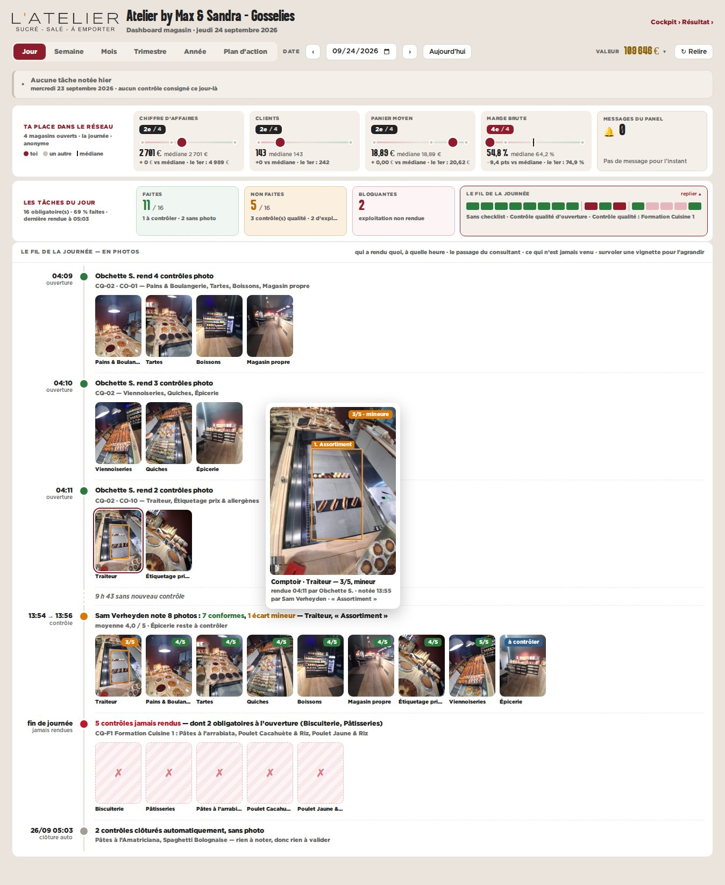
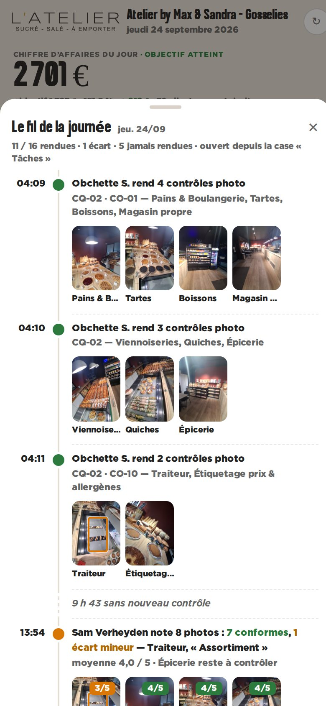

maquette · dashboard magasin · vue Jour · Gosselies, jeudi 24/09/2026 · données réelles du panel
C — « Le fil de la journée » raconté en photos
Le tiroir du fil devient un journal horodaté : qui a rendu quoi et à quelle heure, le passage du consultant avec ses notes, puis ce qui n’est jamais venu. Au téléphone, le même journal monte depuis la case « Tâches ».
Pour
- Répond à « quand ? et par qui ? » : tout rendu à 04:09–04:11, noté à 13:55.
- Montre le creux (9 h 43) et les oublis.
- S’appuie sur un bloc qui existe déjà.
Contre
- Fermé par défaut : le franchisé doit ouvrir le fil.
- Moins direct pour juger « le comptoir est-il beau ? ».

bureau — le fil déplié

téléphone — le tiroir